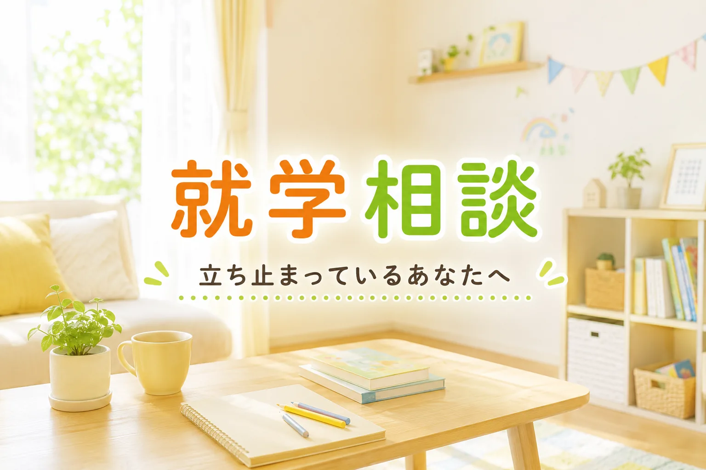

「就学相談を受けてみませんか」
幼稚園や保育園の先生、健診の保健師さん、療育の先生から、そう言われたとき。お父さんお母さんの胸に、いくつもの気持ちが同時に湧き上がってくるのではないかと思います。
「うちの子、そんなに気になるのかな」
「『普通の学校』に行けないってこと？」
「もしかして、特別支援学級や特別支援学校になる？」
そして、なんとも言えない不安や、軽い動揺、ときには「ショック」と呼んでいい感覚が、夜になっても胸の奥に残ることがあります。
私は長年、特別支援教育の現場で子どもたちや保護者の方々と関わってきました。就学相談の前で立ち止まってしまう親御さんを、何人も見てきました。そして、就学相談のあとで「思っていたのと違った」と感じた親御さんの声も、たくさん聞いてきました。
最初にお伝えしたいのは、これです。
「就学相談を受けたら、自動的に特別支援学級や特別支援学校に決まる」というのは、誤解です。
※ 就学相談の基本的な仕組みは全国共通です。ただし、手続きの時期や窓口は市区町村によって異なります。この記事では千葉市を例に取り上げますが、詳細はお住まいの市区町村の教育委員会にお確かめください。
この記事でわかること（3点）
- 就学相談は、特別支援に進むことを決める場ではないこと
- 保護者の意向が制度上どう扱われるのか（希望が通らなかった方へも、正直に）
- 就学時に決めた学びの場は、あとから見直せること
「相談」と「決定」は違います
就学相談という名前は、少し誤解を生みやすい言葉かもしれません。
「相談」というよりも、「お子さんに合う学びの場を、家庭と学校と専門家で一緒に考える話し合い」と思ってもらった方が、実態に近いと思います。
通常学級に進むお子さんも、就学相談を受けることがあります。
通級指導教室を使いながら通常学級に通うお子さんも、就学相談を受けます。
特別支援学級を選ぶお子さんも、特別支援学校に進むお子さんも、就学相談を受けます。
つまり、就学相談は「特別支援に進むかどうかを決める場」ではなく、「そのお子さんにとって、いま、どの学びの場が一番いいかを、みんなで考える場」ということです。
千葉市の就学説明会でも、通常学級を考えている保護者向けの資料が用意されています。就学相談は、特別支援学級や特別支援学校だけを前提にしたものではありません。
「判定」という言葉の重み
「専門家が判定する」「教育委員会が決める」。こうした言葉を聞くと、自分たちの手の届かないところで子どもの行き先が決められてしまうような感覚を抱く方は多いと思います。
そして、すでにそういう経験をした方もいるかもしれません。
「希望したのに通らなかった」「気づいたら決まっていた」——29年の現場で、私はそういう声を何度も聞いてきました。その経験は、例外でも、あなたの思い違いでもありません。
制度上は、2013年（平成25年）の学校教育法施行令の改正以降、「障害が重いから自動的にこの学校」という機械的な振り分けはできなくなっています。本人・保護者の意見を尊重し、合意形成を目指すことが原則とされています。最終的に就学先を決めるのは、市町村の教育委員会です。
ただ、「原則」と「現実」のあいだには、距離があることがあります。丁寧に話し合ってもらえたと感じた方もいれば、結局は言われた通りになったと感じた方もいる。どちらも現実です。
だから、「きっとうまくいきます」とは言い切りません。
ただ、知っているかどうかで、動き方は変わります。希望と判定がずれたとき、何を言えるのか。どこに相談できるのか。このシリーズで、正直に書いていきます。
決めたら終わり、ではありません
もう一つ、就学相談の前で立ち止まる方によく伝えていることがあります。
就学のときに決めた学びの場は、ずっと固定されるわけではありません。
特別支援学級に入った後、通常学級に転籍するお子さんがいます。
通常学級でスタートして、途中から通級を使い始めるお子さんがいます。
特別支援学校から地域の特別支援学級に移るお子さんもいれば、その逆もあります。
進級のタイミングで見直すことが多いですが、お子さんの状態や学校での適応状況によっては、必要に応じて学びの場を見直すこともあります。
「6歳のいま、この子の一生を決めなければならない」
そう思うと、判断の重さに足がすくみます。でも、本当はそうではないんです。いまのこの子に、いま一番合う場所を選ぶ。それだけです。あとから見直せます。
だから、「一度決めたら間違えられない」と、自分を追い詰めすぎないでほしいと思います。
それでも、戸惑いは消えない
ここまで読んで、頭では「なるほど、そういうことか」と理解できても、胸の奥のざわめきが消えないのは、自然なことです。
「うちの子は、ほかの子と何が違うんだろう」
「私の育て方が、何かまずかったのかな」
「これから先、この子は幸せになれるんだろうか」
そう感じている方もいるかもしれません。
29年の現場で出会ったお父さんお母さんの多くが、最初は同じ気持ちでした。涙が止まらない夜があった方も、たくさんいます。一人で抱え込んで、誰にも言えなかった方もいます。
その気持ちは、決して間違っていません。
「就学相談を勧められた」というのは、お子さんに「問題がある」と烙印を押されたということではありません。その子らしさや、見えにくかった支援ニーズを、入学前に一緒に考えておきたいという呼びかけでもあります。
頭でそう分かっていても、心が追いつかない。そういうものだと思います。だから、急いで気持ちを整理しなくていいです。そのまま、続きを読んでいただけたらと思います。
まずは、知ることから
戸惑いを抱えながらでも、できることがあります。
それは、「知る」ことです。
就学相談がどう進むのか。どんな選択肢があるのか。判定はどう決まるのか。希望が通らなかったらどうすればいいのか。
知っていることが増えると、霧が少しずつ晴れていきます。
このシリーズでは、これからゆっくり、就学相談について知っておくと安心できることを、1つずつ一緒に確かめていきます。千葉市の情報を中心にしながら、制度の基本は全国共通の内容としてお伝えします。
専門用語は、できるだけやさしい言葉に置き換えます。制度の話だけでなく、現場で見てきた親御さんたちの姿も、織り込みながらお伝えします。
読みながら、ふと肩の力が抜ける。そんな場所にしたいと思いながら書いています。
就学相談、いつから・誰に相談すればいい？
一般的には、お子さんが年長（5歳児クラス）になる春頃から動き始めるご家庭が多いです。まずはお住まいの市区町村の教育委員会、または在籍している園の先生に「就学相談について聞きたい」と伝えることが、最初の一歩です。詳しくは次回以降でご説明します。
次回予告
次回は、「4つの学びの場」について、ていねいにご紹介します。
通常学級、通級指導教室、特別支援学級、特別支援学校。名前は聞いたことがあっても、それぞれが何をする場所で、どんなお子さんが通っていて、どう違うのか。実は、知っているようで知らないことが多いところです。
それぞれを丁寧に比べながら、「うちの子にとって、どこが合いそうか」を考える土台にしていただける回にします。
今日は、ここまで読んでくださってありがとうございました。
どうか、ご自分にも、お子さんにも、優しくいてあげてください。
参考資料
- 文部科学省「障害のある子供の就学先決定について」
- 文部科学省「障害のある児童生徒等に対する早期からの一貫した支援について（通知）」
- 文部科学省「学校教育法施行令の一部改正について（通知）」（平成25年）
- 千葉市教育委員会 養護教育センター（就学相談のご案内）
確認日：2026年6月1日